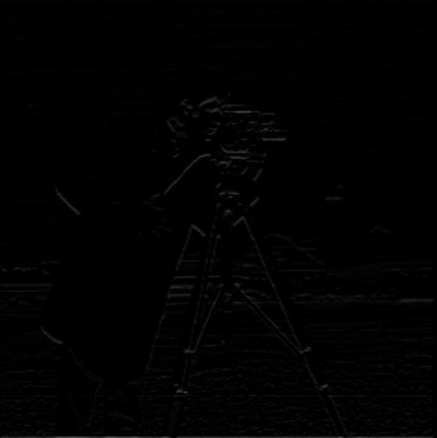

Project Showcase: Exploring Image Processing Techniques
Part 1: Understanding Image Filters
Part 1.1: Finite Difference Operator
In this part, I experimented with basic finite difference filters to capture the gradients of an image. The goal was to identify changes in pixel intensity along the (x) and (y) axes, and then use these gradients to generate an edge map.
-
Original Image:
- I started with the 'cameraman' image.

-
Gradient in (x) Direction:
- I applied a filter (Dx = [1, -1]) to detect horizontal edges, highlighting changes along the (x)-axis.
-
Gradient in (y) Direction:
- Similarly, I used a filter (Dy = [1, -1]^T) for vertical edges, capturing intensity shifts along the (y)-axis.

-
Gradient Magnitude:
- By combining the horizontal and vertical gradients, I calculated the overall gradient magnitude (sqrt((df/dx)^2 + (df/dy)^2)), representing the edge strength at each pixel.

-
Edge Detection (Threshold = 0.1):
- To emphasize the prominent edges, I binarized the gradient magnitude image using a threshold of 0.25.

Part 1.2: Derivative of Gaussian (DoG) Filter
To reduce noise and achieve smoother edges, I employed the Derivative of Gaussian (DoG) filter. This filter smooths the image first, and then computes the gradients.
-
Blurred Image:
- I started by blurring the original image using a Gaussian filter to suppress noise.
-
Gradients of the Blurred Image:
- I then applied the finite difference filters to the blurred image, producing smoother gradient images with reduced noise.
- 
-
Smoothed Gradient Magnitude:
- The gradient magnitude calculated from the blurred image is less noisy compared to the one obtained earlier.
-
Edge Detection (Threshold = 0.1):
- With a lower threshold, the edges are clearer and more distinct, while noise remains minimal.

-
Alternative Approach: Direct DoG Filters
- Instead of separately blurring and then applying finite differences, I directly convolved the image with Derivative of Gaussian filters for (x) and (y) directions. This will significantly reduce the computational costs by utilizing the commutativity of convolution.
Part 2: Exploring Image Frequencies
Part 2.1: Image Sharpening
In this section, I explored the concept of image sharpening by enhancing the high-frequency details. The process, known as unsharp masking, involves subtracting a blurred version of the image from the original to highlight fine details.
-
Original Images:
- I chose some images and prepared them for sharpening.

-
High frequencies of the images (Original image - Low frequencies):
-
Sharpened Images with Different Intensities using unsharp mask filter ((1 + alpha)*delta - alpha*gaussian_kernel where delta is an impulse filter):
- By adjusting the sharpening intensity parameter (alpha), I produced varying levels of sharpness.

-
Blurring and Then Sharpening:
- I first blurred an image and then sharpened it to observe the changes. The resulting image appeared noisier, with exaggerated edges and reduced fine detail.

Part 2.2: Hybrid Images
Hybrid images combine the low-frequency components of one image with the high-frequency components of another. These images appear differently depending on the viewing distance.
-
Example 1: Derek and Nutmeg
- I combined the low frequencies of Derek with the high frequencies of Nutmeg the cat.


-
Example 2: Water Heisenberg
-
Example 3: Tiger Cat (Favorite)


Frequency Analysis:
-
I visualized the frequency components of the images of Tiger Cat to illustrate how the hybrid effect is formed.
Bells and Whistles
I also experimented with color in hybrid images. I found that combining colors from both images yielded the most visually appealing results.
-
All Black & White:
-
Color from Low Frequency Image:
-
Color from High Frequency Image:
-
Color from Both Images:
Part 2.3: Gaussian and Laplacian Stacks
I implemented Gaussian and Laplacian stacks to perform the multi-resolution blending of two images. Blending at each sub-band will allow a cleaner blend without ugly seams. I recreated a classic example (Figure 3.42) of multi-resolution blending using Gaussian and Laplacian stacks at different levels.
-
Gaussian Stack of Apple:
-
Gaussian Stack of Orange:
-
Gaussian Stack of Mask:
-
Laplacian Stack of Apple:
-
Half Blended Laplacian Stack of Apple:
-
Laplacian Stack of Blended Image:
-
Half Blended Laplacian Stack of Orange:
-
Laplacian Stack of Orange:
Part 2.4: Multiresolution Blending
For this final part, I blended images using the technique mentioned in the paper (G*L1 + (1-G)*L2), which ensures a smooth transition between the two images at various frequency levels.
-
Blending Example: The Oraple
- I blended an apple and an orange to create a smooth composite image.


-
Creative Blending:
- I experimented with different image pairs, such as blending Oppenheimer and a smiling mouth, to create fun and interesting composites. The result was a bit weird and artificial as the tone of the lips was very different. Also, the images might have different white balance. I think we need to implement some ML techniques to make it real.

- Here I attached the head of a cat onto the body of a dog. The new species is called "Dogcat".
-
Laplacian stacks for Dogcat:
Reflection:
This project taught me the impact of different frequency components on image perception. Blending images at multiple scales produces smoother, more seamless results compared to simple overlay techniques. I learned many fundamentals of image processing and how our smartphones artificially enhance our images.